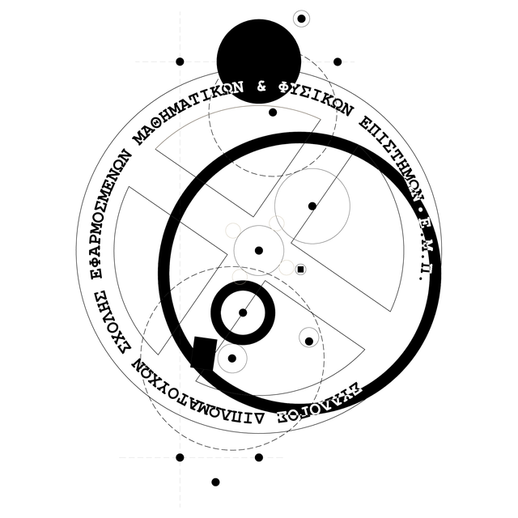

Σύλλογος Διπλωματούχων
ΣΕΜΦΕ ΕΜΠ
Ο επίσημος φορέας των Διπλωματούχων της Σχολής Εφαρμοσμένων Μαθηματικών και Φυσικών Επιστημών του Εθνικού Μετσόβιου Πολυτεχνείου, που αγωνίζεται για τη διεύρυνση των επαγγελματικών δικαιωμάτων των μελών του.

Ένα ενωμένο δίκτυο γύρω από τη ΣΕΜΦΕ
Ο Σύλλογος Διπλωματούχων ΣΕΜΦΕ αγωνίζεται για τη διεύρυνση των επαγγελματικών δικαιωμάτων των μελών του και για τη σύσφιξη των σχέσεων Αποφοίτων μεταξύ τους, με τη Σχολή και με τους ευρύτερους κοινωνικούς και πολιτειακούς φορείς.
Οραματιζόμαστε ένα ενωμένο δίκτυο Αποφοίτων, Προπτυχιακών Φοιτητών και Καθηγητών ΣΕΜΦΕ που επικοινωνούν μεταξύ τους ενεργά για επιστημονικά και επαγγελματικά θέματα παράγοντας προστιθέμενη αξία στη Σχολή και το ΕΜΠ.
Τι κάνει ο Σύλλογος
Ο Σύλλογος Διπλωματούχων της Σχολής Εφαρμοσμένων Μαθηματικών και Φυσικών Επιστημών του Εθνικού Μετσόβιου Πολυτεχνείου είναι σωματείο κοινωφελές, επιστημονικό και ευρύτερα ερευνητικό χωρίς να έχει κερδοσκοπικό ή πολιτικό χαρακτήρα με σκοπό:
1Τα επαγγελματικά συμφέροντα των αποφοίτων
Την κατοχύρωση, προαγωγή και προστασία των ηθικών, πνευματικών, οικονομικών και γενικότερα των επαγγελματικών συμφερόντων των αποφοίτων της Σχολής.
2Αλληλεγγύη, συναδελφικότητα και επιστημονικό επίπεδο
Την ανάπτυξη στενών δεσμών αλληλεγγύης και συναδελφικότητας καθώς και την ανύψωση του επιστημονικού επιπέδου των μελών χωρίς οποιαδήποτε πολιτική επιδίωξη.
3Εκδηλώσεις για τα μέλη και τη Σχολή
Τη διοργάνωση εκδηλώσεων που έχουν σχέση με την ανάπτυξη και τη σύσφιξη των σχέσεων των μελών του Συλλόγου και της Σχολής.
4Ενίσχυση της διδασκαλίας και της έρευνας στη Σχολή
Τη βελτίωση και την ενίσχυση του επιτελούμενου διδακτικού και ερευνητικού έργου, προπτυχιακού και μεταπτυχιακού, στη Σχολή με σκοπό την σύνδεση της δεξαμενής παροχής γνώσης με τις σύγχρονες ανάγκες της επιστήμης και της τεχνολογίας.
5Βοήθεια στους διπλωματούχους
Την ηθική, επαγγελματική, υλική και κάθε είδους άλλη παροχή βοήθειας και ενίσχυση των διπλωματούχων της Σχολής.
6Ηλεκτρονική βιβλιοθήκη και αρχείο
Την ίδρυση και λειτουργία ηλεκτρονικής βιβλιοθήκης και αρχείου σχετικού με το αντικείμενο των εφαρμοσμένων μαθηματικών και φυσικών επιστημών.
7Εκδόσεις: περιοδικά, επιστημονικά κείμενα, βιβλία
Την έκδοση περιοδικών, επιστημονικών κειμένων και βιβλίων σχετικά με το αντικείμενο των εφαρμοσμένων μαθηματικών και φυσικών επιστημών.
8Συνέδρια, σεμινάρια, ημερίδες και ταξίδια μελέτης
Την οργάνωση συνεδρίων, σεμιναρίων, ημερίδων και ταξιδιών μελέτης για την προώθηση της έρευνας και την επέκταση της τεχνογνωσίας πάνω στο επιστημονικό αντικείμενο των εφαρμοσμένων μαθηματικών και φυσικών επιστημών.
9Συνεργασία με αρχές, την Ευρωπαϊκή Ένωση και διεθνείς οργανισμούς
Τη συνεργασία με τις Ελληνικές αρχές, την Ευρωπαϊκή Ένωση και οποιοδήποτε άλλο διεθνή οργανισμό προκειμένου να προωθηθεί το επιστημονικό αντικείμενο των μελών της Σχολής και του Συλλόγου.
10Ερευνητικά προγράμματα και καινοτομία
Την αναζήτηση και συμμετοχή σε προγράμματα εθνικά, ευρωπαϊκά και διεθνή για την προώθηση της έρευνας και της καινοτομίας πάνω στο επιστημονικό αντικείμενο των εφαρμοσμένων μαθηματικών και φυσικών επιστημών.
11Συνεργασία με συναφή σωματεία και ενώσεις
Τη συνεργασία με άλλα συναφή επιστημονικά και επαγγελματικά σωματεία και ενώσεις της Ελλάδας και του εξωτερικού.
Από την Ιδρυτική Συνέλευση στη νέα ειδικότητα
Ο Σύλλογος χειρίζεται όλα τα ζητήματα που έχουν να κάνουν με την επαγγελματική κατοχύρωση των αποφοίτων της ΣΕΜΦΕ, όπως επίσης και τον συντονισμό ενημερωτικών συζητήσεων και ημερίδων.
- Οκτώβριος 2013Ιδρυτική ΣυνέλευσηΣτις 29 Οκτωβρίου 2013 στη Ζωγράφου· ο Σύλλογος καταχωρήθηκε στο βιβλίο του Πρωτοδικείου Αθηνών.
- 2014Προσφυγή για ένταξη στο ΤΕΕΠροσφυγή στο Διοικητικό Εφετείο Αθηνών για την ένταξή μας στο Τεχνικό Επιμελητήριο Ελλάδος.
- Φεβρουάριος 202410 χρόνια ΣύλλογοςΕπετειακή εκδήλωση στην Πρυτανεία του ΕΜΠ.
- Φεβρουάριος 2025Νέα βασική ειδικότητα στο ΤΕΕΗ Αντιπροσωπεία του ΤΕΕ αποφασίζει νέα βασική ειδικότητα για τους διπλωματούχους μας.
- Δεκέμβριος 2025Σχολή Μηχανικών ΕΜΦΕΟμόφωνη απόφαση της Σχολής για τη μετονομασία.
Το Διοικητικό Συμβούλιο
Εκλέγεται από τη Γενική Συνέλευση κάθε δύο χρόνια, μαζί με την τριμελή Εξελεγκτική Επιτροπή.
Μαζί είμαστε πιο δυνατοί
Εγγραφείτε στο Σύλλογο, αποκτήστε πρόσβαση στην περιοχή μελών και στηρίξτε τις δράσεις μας για την επαγγελματική κατοχύρωση των διπλωματούχων ΣΕΜΦΕ.